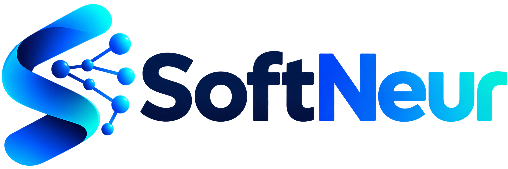

Préparer dans AMC
Créez le sujet et exportez le projet destiné à DeepAMC.

Nous contacter →GENIE LOGICIEL × INTELLIGENCE ARTIFICIELLE × INNOVATION
Découvrez les produits SoftNeur et les possibilités de développement pour répondre à vos besoins.
UN PRODUIT SOFTNEUR · ÉDUCATION
Numérisez, corrigez et annotez les copies AMC depuis un smartphone. DeepAMC Mobile et Desktop prolongent le flux Auto Multiple Choice sans remplacer AMC.
Créez le sujet et exportez le projet destiné à DeepAMC.
Capturez les feuilles ou importez des PDF, JPEG, PNG et TIFF déjà numérisés.
Contrôlez les réponses, associez les étudiants et exportez les copies annotées.
Réimportez les résultats avec DeepAMC Desktop puis poursuivez dans les rapports AMC.
VOTRE PROJET
Vous avez besoin d’un outil métier, d’une application ou d’une plateforme ? Décrivons ensemble les usages et les priorités.
DONNONS FORME À VOTRE PROJET